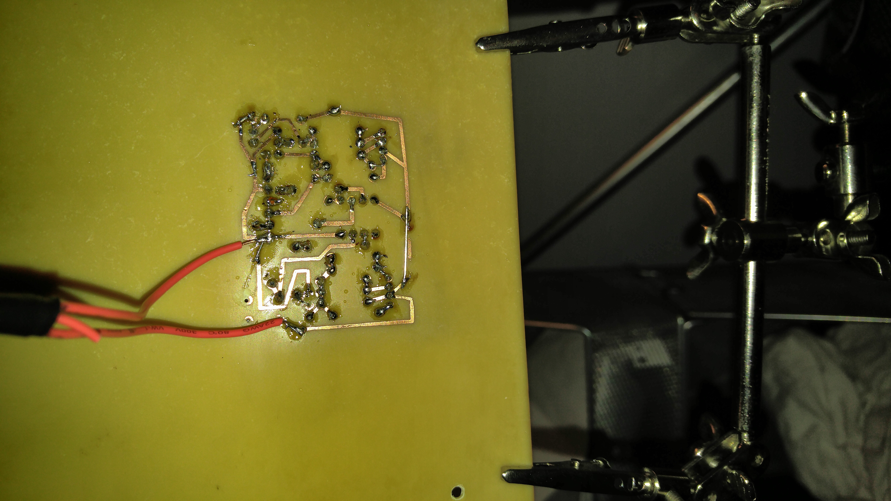
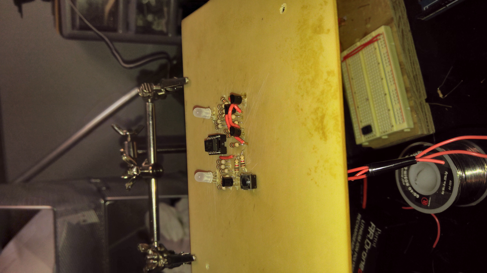

Binary Clock
This project was my first attempt at etching my own PCB. This was done a long time ago, so I don't have many photos to document the process, but the 3 below should suffice. I designed a binary clock, where I created my own time display protocol. I don't have any videos of this clock working, but basically one LED displayed the hour hand, and the other LED displayed the minute hand. When the button on the PCB was pressed, the LED's blinked the current time with the RGB LEDs according to my custom protocol. The PCB was etched with a much friendlier chemcial combination of vineger and salt after ironing on the inkjet printed circuit pattern.Photo Gallery


